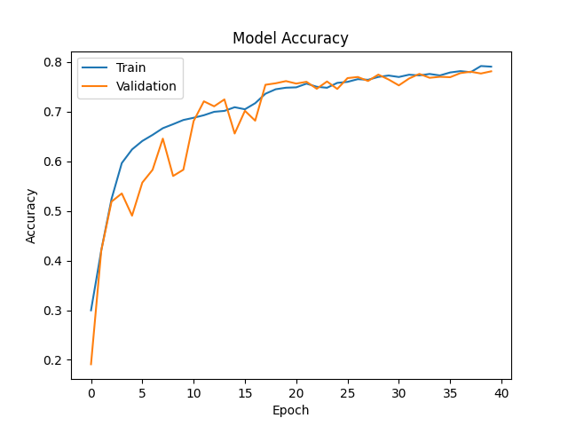
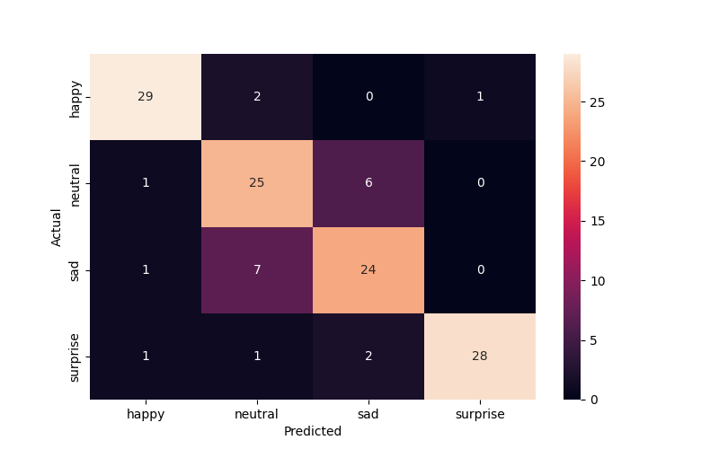
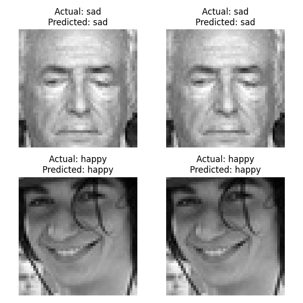

        <html>
        <head><title>Model Summary - 2024-04-10 13:42:13</title></head>
        <body>
        <h1>Model Configuration</h1>
        <pre>model:
  compile:
    learning_rate: 0.01
    optimizer: Adam
    optimizer_name: adam
  data:
    color_layers: 1
    color_mode: grayscale
    img_height: 48
    img_width: 48
    use_data_loaders: true
  layers:
  - filters: 64
    kernel_size:
    - 2
    - 2
    padding: same
    type: Conv2D
  - type: BatchNormalization
  - alpha: 0.1
    type: LeakyReLU
  - pool_size:
    - 2
    - 2
    type: MaxPooling2D
  - filters: 128
    kernel_size:
    - 2
    - 2
    padding: same
    type: Conv2D
  - type: BatchNormalization
  - alpha: 0.1
    type: LeakyReLU
  - pool_size:
    - 2
    - 2
    type: MaxPooling2D
  - filters: 256
    kernel_size:
    - 2
    - 2
    padding: same
    type: Conv2D
  - type: BatchNormalization
  - alpha: 0.1
    type: LeakyReLU
  - pool_size:
    - 2
    - 2
    type: MaxPooling2D
  - filters: 512
    kernel_size:
    - 2
    - 2
    padding: same
    type: Conv2D
  - type: BatchNormalization
  - alpha: 0.1
    type: LeakyReLU
  - pool_size:
    - 2
    - 2
    type: MaxPooling2D
  - filters: 128
    kernel_size:
    - 2
    - 2
    padding: same
    type: Conv2D
  - type: BatchNormalization
  - alpha: 0.1
    type: LeakyReLU
  - pool_size:
    - 2
    - 2
    type: MaxPooling2D
  - type: Flatten
  - activation: relu
    type: Dense
    units: 512
  - activation: relu
    type: Dense
    units: 128
  - type: Dense
    units: 64
  - type: BatchNormalization
  - type: ReLU
  - activation: softmax
    type: Dense
    units: 4
  train:
    batch_size: 64
    epochs: 40
    patience: 7
</pre>
        <h1>Model Summary</h1>
        <pre>Model: "sequential"
┏━━━━━━━━━━━━━━━━━━━━━━━━━━━━━━━━━━━━━━┳━━━━━━━━━━━━━━━━━━━━━━━━━━━━━┳━━━━━━━━━━━━━━━━━┓
┃ Layer (type)                         ┃ Output Shape                ┃         Param # ┃
┡━━━━━━━━━━━━━━━━━━━━━━━━━━━━━━━━━━━━━━╇━━━━━━━━━━━━━━━━━━━━━━━━━━━━━╇━━━━━━━━━━━━━━━━━┩
│ conv2d (Conv2D)                      │ (None, 48, 48, 64)          │             320 │
├──────────────────────────────────────┼─────────────────────────────┼─────────────────┤
│ batch_normalization                  │ (None, 48, 48, 64)          │             256 │
│ (BatchNormalization)                 │                             │                 │
├──────────────────────────────────────┼─────────────────────────────┼─────────────────┤
│ leaky_re_lu (LeakyReLU)              │ (None, 48, 48, 64)          │               0 │
├──────────────────────────────────────┼─────────────────────────────┼─────────────────┤
│ max_pooling2d (MaxPooling2D)         │ (None, 24, 24, 64)          │               0 │
├──────────────────────────────────────┼─────────────────────────────┼─────────────────┤
│ conv2d_1 (Conv2D)                    │ (None, 24, 24, 128)         │          32,896 │
├──────────────────────────────────────┼─────────────────────────────┼─────────────────┤
│ batch_normalization_1                │ (None, 24, 24, 128)         │             512 │
│ (BatchNormalization)                 │                             │                 │
├──────────────────────────────────────┼─────────────────────────────┼─────────────────┤
│ leaky_re_lu_1 (LeakyReLU)            │ (None, 24, 24, 128)         │               0 │
├──────────────────────────────────────┼─────────────────────────────┼─────────────────┤
│ max_pooling2d_1 (MaxPooling2D)       │ (None, 12, 12, 128)         │               0 │
├──────────────────────────────────────┼─────────────────────────────┼─────────────────┤
│ conv2d_2 (Conv2D)                    │ (None, 12, 12, 256)         │         131,328 │
├──────────────────────────────────────┼─────────────────────────────┼─────────────────┤
│ batch_normalization_2                │ (None, 12, 12, 256)         │           1,024 │
│ (BatchNormalization)                 │                             │                 │
├──────────────────────────────────────┼─────────────────────────────┼─────────────────┤
│ leaky_re_lu_2 (LeakyReLU)            │ (None, 12, 12, 256)         │               0 │
├──────────────────────────────────────┼─────────────────────────────┼─────────────────┤
│ max_pooling2d_2 (MaxPooling2D)       │ (None, 6, 6, 256)           │               0 │
├──────────────────────────────────────┼─────────────────────────────┼─────────────────┤
│ conv2d_3 (Conv2D)                    │ (None, 6, 6, 512)           │         524,800 │
├──────────────────────────────────────┼─────────────────────────────┼─────────────────┤
│ batch_normalization_3                │ (None, 6, 6, 512)           │           2,048 │
│ (BatchNormalization)                 │                             │                 │
├──────────────────────────────────────┼─────────────────────────────┼─────────────────┤
│ leaky_re_lu_3 (LeakyReLU)            │ (None, 6, 6, 512)           │               0 │
├──────────────────────────────────────┼─────────────────────────────┼─────────────────┤
│ max_pooling2d_3 (MaxPooling2D)       │ (None, 3, 3, 512)           │               0 │
├──────────────────────────────────────┼─────────────────────────────┼─────────────────┤
│ conv2d_4 (Conv2D)                    │ (None, 3, 3, 128)           │         262,272 │
├──────────────────────────────────────┼─────────────────────────────┼─────────────────┤
│ batch_normalization_4                │ (None, 3, 3, 128)           │             512 │
│ (BatchNormalization)                 │                             │                 │
├──────────────────────────────────────┼─────────────────────────────┼─────────────────┤
│ leaky_re_lu_4 (LeakyReLU)            │ (None, 3, 3, 128)           │               0 │
├──────────────────────────────────────┼─────────────────────────────┼─────────────────┤
│ max_pooling2d_4 (MaxPooling2D)       │ (None, 1, 1, 128)           │               0 │
├──────────────────────────────────────┼─────────────────────────────┼─────────────────┤
│ flatten (Flatten)                    │ (None, 128)                 │               0 │
├──────────────────────────────────────┼─────────────────────────────┼─────────────────┤
│ dense (Dense)                        │ (None, 512)                 │          66,048 │
├──────────────────────────────────────┼─────────────────────────────┼─────────────────┤
│ dense_1 (Dense)                      │ (None, 128)                 │          65,664 │
├──────────────────────────────────────┼─────────────────────────────┼─────────────────┤
│ dense_2 (Dense)                      │ (None, 64)                  │           8,256 │
├──────────────────────────────────────┼─────────────────────────────┼─────────────────┤
│ batch_normalization_5                │ (None, 64)                  │             256 │
│ (BatchNormalization)                 │                             │                 │
├──────────────────────────────────────┼─────────────────────────────┼─────────────────┤
│ re_lu (ReLU)                         │ (None, 64)                  │               0 │
├──────────────────────────────────────┼─────────────────────────────┼─────────────────┤
│ dense_3 (Dense)                      │ (None, 4)                   │             260 │
└──────────────────────────────────────┴─────────────────────────────┴─────────────────┘
 Total params: 1,096,452 (4.18 MB)
 Trainable params: 1,094,148 (4.17 MB)
 Non-trainable params: 2,304 (9.00 KB)
</pre>
        <h2>Test Accuracy</h2>
        <p>
1/2 ━━━━━━━━━━━━━━━━━━━━ 0s 21ms/step - accuracy: 0.8438 - loss: 0.4697
2/2 ━━━━━━━━━━━━━━━━━━━━ 0s 7ms/step - accuracy: 0.8333 - loss: 0.4786 

1/2 ━━━━━━━━━━━━━━━━━━━━ 0s 510ms/step
2/2 ━━━━━━━━━━━━━━━━━━━━ 1s 2ms/step  
</p>
        <h2>Accuracy Plot</h2>
        
        <h2>Classification Report</h2>
        <pre>              precision    recall  f1-score   support

       happy       0.91      0.91      0.91        32
     neutral       0.71      0.78      0.75        32
         sad       0.75      0.75      0.75        32
    surprise       0.97      0.88      0.92        32

    accuracy                           0.83       128
   macro avg       0.83      0.83      0.83       128
weighted avg       0.83      0.83      0.83       128

</pre>
        <h2>History</h2>
        <pre>Epoch 1: accuracy: 0.2997, loss: 1.3749, val_accuracy: 0.1911, val_loss: 1.6678, learning_rate: 0.0100
Epoch 2: accuracy: 0.4205, loss: 1.2014, val_accuracy: 0.4203, val_loss: 1.2865, learning_rate: 0.0100
Epoch 3: accuracy: 0.5242, loss: 1.0587, val_accuracy: 0.5188, val_loss: 1.2229, learning_rate: 0.0100
Epoch 4: accuracy: 0.5965, loss: 0.9472, val_accuracy: 0.5353, val_loss: 1.1753, learning_rate: 0.0100
Epoch 5: accuracy: 0.6240, loss: 0.8809, val_accuracy: 0.4905, val_loss: 1.2071, learning_rate: 0.0100
Epoch 6: accuracy: 0.6410, loss: 0.8517, val_accuracy: 0.5572, val_loss: 1.0592, learning_rate: 0.0100
Epoch 7: accuracy: 0.6533, loss: 0.8351, val_accuracy: 0.5829, val_loss: 1.0563, learning_rate: 0.0100
Epoch 8: accuracy: 0.6668, loss: 0.7918, val_accuracy: 0.6458, val_loss: 0.8429, learning_rate: 0.0100
Epoch 9: accuracy: 0.6748, loss: 0.7812, val_accuracy: 0.5704, val_loss: 1.1100, learning_rate: 0.0100
Epoch 10: accuracy: 0.6833, loss: 0.7721, val_accuracy: 0.5831, val_loss: 0.9460, learning_rate: 0.0100
Epoch 11: accuracy: 0.6877, loss: 0.7564, val_accuracy: 0.6811, val_loss: 0.7690, learning_rate: 0.0100
Epoch 12: accuracy: 0.6929, loss: 0.7520, val_accuracy: 0.7209, val_loss: 0.6828, learning_rate: 0.0100
Epoch 13: accuracy: 0.6998, loss: 0.7323, val_accuracy: 0.7109, val_loss: 0.7238, learning_rate: 0.0100
Epoch 14: accuracy: 0.7016, loss: 0.7247, val_accuracy: 0.7247, val_loss: 0.7022, learning_rate: 0.0100
Epoch 15: accuracy: 0.7090, loss: 0.7165, val_accuracy: 0.6560, val_loss: 0.8205, learning_rate: 0.0100
Epoch 16: accuracy: 0.7049, loss: 0.7153, val_accuracy: 0.7018, val_loss: 0.7321, learning_rate: 0.0100
Epoch 17: accuracy: 0.7171, loss: 0.6944, val_accuracy: 0.6819, val_loss: 0.7839, learning_rate: 0.0100
Epoch 18: accuracy: 0.7362, loss: 0.6522, val_accuracy: 0.7543, val_loss: 0.6136, learning_rate: 0.0020
Epoch 19: accuracy: 0.7453, loss: 0.6246, val_accuracy: 0.7573, val_loss: 0.6068, learning_rate: 0.0020
Epoch 20: accuracy: 0.7484, loss: 0.6265, val_accuracy: 0.7617, val_loss: 0.6008, learning_rate: 0.0020
Epoch 21: accuracy: 0.7491, loss: 0.6219, val_accuracy: 0.7567, val_loss: 0.6053, learning_rate: 0.0020
Epoch 22: accuracy: 0.7566, loss: 0.6073, val_accuracy: 0.7603, val_loss: 0.5886, learning_rate: 0.0020
Epoch 23: accuracy: 0.7503, loss: 0.6067, val_accuracy: 0.7462, val_loss: 0.6339, learning_rate: 0.0020
Epoch 24: accuracy: 0.7482, loss: 0.6233, val_accuracy: 0.7609, val_loss: 0.6075, learning_rate: 0.0020
Epoch 25: accuracy: 0.7581, loss: 0.6007, val_accuracy: 0.7458, val_loss: 0.6264, learning_rate: 0.0020
Epoch 26: accuracy: 0.7601, loss: 0.5941, val_accuracy: 0.7677, val_loss: 0.5852, learning_rate: 0.0020
Epoch 27: accuracy: 0.7656, loss: 0.5920, val_accuracy: 0.7699, val_loss: 0.5864, learning_rate: 0.0020
Epoch 28: accuracy: 0.7643, loss: 0.5798, val_accuracy: 0.7619, val_loss: 0.6082, learning_rate: 0.0020
Epoch 29: accuracy: 0.7701, loss: 0.5783, val_accuracy: 0.7748, val_loss: 0.5730, learning_rate: 0.0020
Epoch 30: accuracy: 0.7729, loss: 0.5778, val_accuracy: 0.7649, val_loss: 0.5851, learning_rate: 0.0020
Epoch 31: accuracy: 0.7699, loss: 0.5748, val_accuracy: 0.7531, val_loss: 0.6256, learning_rate: 0.0020
Epoch 32: accuracy: 0.7746, loss: 0.5721, val_accuracy: 0.7669, val_loss: 0.5947, learning_rate: 0.0020
Epoch 33: accuracy: 0.7731, loss: 0.5654, val_accuracy: 0.7762, val_loss: 0.5708, learning_rate: 0.0020
Epoch 34: accuracy: 0.7761, loss: 0.5585, val_accuracy: 0.7683, val_loss: 0.5871, learning_rate: 0.0020
Epoch 35: accuracy: 0.7730, loss: 0.5610, val_accuracy: 0.7703, val_loss: 0.5848, learning_rate: 0.0020
Epoch 36: accuracy: 0.7791, loss: 0.5483, val_accuracy: 0.7695, val_loss: 0.5989, learning_rate: 0.0020
Epoch 37: accuracy: 0.7818, loss: 0.5526, val_accuracy: 0.7778, val_loss: 0.5750, learning_rate: 0.0020
Epoch 38: accuracy: 0.7797, loss: 0.5491, val_accuracy: 0.7806, val_loss: 0.5710, learning_rate: 0.0020
Epoch 39: accuracy: 0.7920, loss: 0.5282, val_accuracy: 0.7770, val_loss: 0.5696, learning_rate: 0.0004
Epoch 40: accuracy: 0.7908, loss: 0.5295, val_accuracy: 0.7814, val_loss: 0.5624, learning_rate: 0.0004
</pre>
        <h2>Confusion Matrix</h2>
        
        <h2>Predicted Images</h2>
        
        </body>
        </html>
        